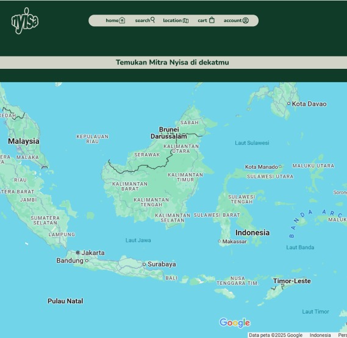
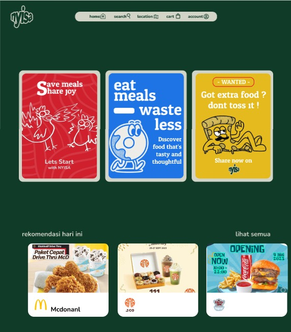
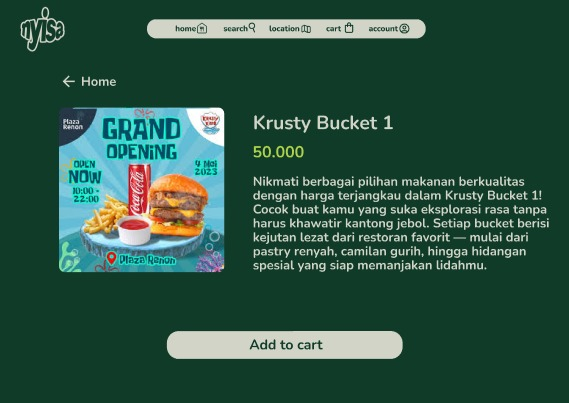
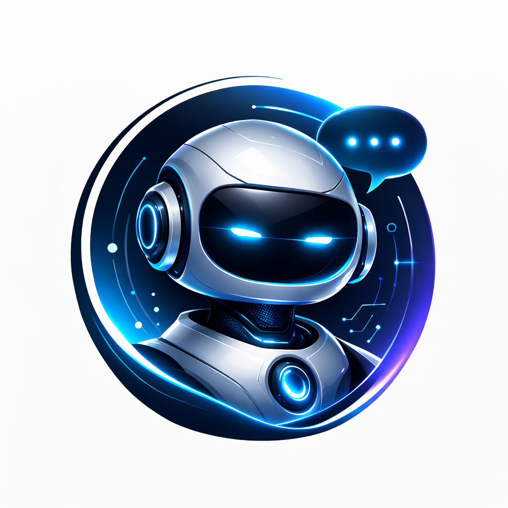

Software & AI Engineer
About Me
I'm an Informatics Engineering student at Universitas Padjadjaran, deeply passionate about the intersection of backend engineering and artificial intelligence. I don't just write code — I architect systems designed to scale and solve real problems.
Beyond my technical work, I believe that every great engineer is shaped by their unique perspectives and disciplines. Want to know more about my projects, my hobbies, or my other hidden skills? Feel free to ask my AI assistant on the bottom right!
Pusat Inovasi Pengajaran dan Pembelajaran (PIPP) Unpad
Developed a specialized RAG-based Chatbot for the MIM program:
PT Stechoq Robotika Indonesia
Medical imaging AI classification for chest X-ray analysis:
Himpunan Mahasiswa Informatika (Himatif) FMIPA Unpad
Organized social initiatives and managed community engagement programs. Developed strong teamwork within the university organization.
Deep dive into the complex architectures and engineering challenges I've solved.
Medical image classification using EfficientNetV2S architecture for accurate tumor detection.
A Virtual Reality game focusing on HCI simulating infant care routines.
End-to-end ML deployment using Streamlit and XGBoost based on DSM-5 parameters.
Automation script converting text to natural handwriting with customizable paper and fonts.
3D game prototype featuring raycasting and destructible physics environments.
Interactive data visualization dashboard built in Power BI to analyze business metrics.
Note: UI screenshots are documented via Figma due to institutional security restrictions on the live environment.
EduSign is a mobile application built for the deaf and hard-of-hearing community, enabling teachers to upload learning videos that are automatically paired with synchronized Indonesian Sign Language (SIBI) animations — making educational content genuinely accessible without any manual effort.
When a teacher submits a YouTube link, the video ID is stored in Firebase. A local processing script — running on a team member's machine due to the multi-GB Whisper AI model being impractical to host on free cloud infrastructure — extracts a subtitle file (.SRT) from the video's audio.
The real complexity lies in preprocessing: every word in the transcript is morphologically reduced to its root form, then matched word-by-word against a local SIBI dataset where each clip is named after its corresponding word. These clips are stitched together and overlaid in the bottom-right corner of the screen in sync with the original video, so learners see both the lesson and its sign language translation simultaneously. Once processed, the SRT is pushed to Firebase Storage for downstream use by the quiz system.
I built the complete quiz system and authentication layer. Teachers can create quizzes manually — inputting multiple-choice questions, options, and correct answers linked to a video ID — or trigger AI-generated quizzes in one click.
For AI generation, the video's SRT transcript is sent to the Groq API (running GPT OSS-120b), which returns 5 structured multiple-choice questions with answer choices and correct answers ready to store. The 5-question cap was a deliberate cost-control decision.
A critical security challenge: API keys cannot be embedded in Flutter client code. My solution was routing all Groq API calls through a Google Cloud Function connected to Firebase — the app triggers the function, which handles the request server-side and returns the quiz data safely, keeping the API key out of the client entirely.
I also implemented Google OAuth authentication, giving teachers and students a secure, frictionless login experience across the platform.
Academic helpdesks face a recurring problem: staff get overwhelmed answering repetitive questions about enrollment deadlines, course requirements, and program details — information that already exists but isn't easily accessible. This chatbot acts as a first line of response, filtering out routine queries so human staff can focus on genuinely complex cases.
The knowledge base was seeded from an existing institutional Q&A dataset, structured with tags (topics) and context (question-answer pairs), importable in bulk via JSON through a custom admin dashboard. Each Q&A pair is stored as an individual chunk in MongoDB Atlas for granular retrieval. The architecture supports any text format — Q&A pairs were used here, but narrative paragraphs work equally well. Three user roles are supported: public users (general queries), registered students (who can also flag knowledge gaps to the admin), and admins (full CRUD and bulk import).
When a user submits a query, it's converted into a vector embedding and run against MongoDB Atlas Vector Search using cosine similarity, retrieving the top 6 most relevant chunks. The number 6 was a practical constraint — running Llama 3.1 locally via Ollama on personal hardware required balancing response quality against memory and inference speed. Those chunks are then passed to the model with a strictly engineered system prompt instructing it to respond as a professional helpdesk assistant that only answers from the provided context and never fabricates information.
Irrelevant question — Bot declines and explains the question is out of scope.
Relevant but not in knowledge base — Bot redirects the user to a human helpdesk.
Relevant and found in knowledge base — Bot generates a grounded, professional response from the retrieved chunks.
The choice to run locally rather than use a cloud API was a deliberate design decision — exposing the system publicly without authentication would risk API cost abuse, a real-world constraint worth engineering around even at prototype stage.

Google Maps Integration
Surplus Food Menus
Order ManagementLeading the Software Engineering Project (PPL) for a location-based surplus food delivery app (utilizing Google Maps API) required balancing team dynamics with rigorous technical standards.
Beyond standard Project Manager duties — such as tracking weekly agile sprint targets via Trello and acting as the crucial communication bridge between the Frontend and Backend teams — the biggest technical challenge I tackled was Quality Assurance.
I initiated and oversaw the implementation of rigorous internal Whitebox Testing using Jest. This ensured that despite the rapid development cycle and integrating complex location-based APIs, the core backend logic and application state remained stable and resilient against regressions.
An intelligent WhatsApp Bot deployed to Microsoft Azure that serves as an always-on AI assistant. It integrates Large Language Models (LLMs) with real-time web scraping and YouTube transcript extraction capabilities, allowing it to provide up-to-date information, summarize videos, and maintain conversation context.
Built using Node.js and whatsapp-web.js to hijack WhatsApp Web via a headless Chrome (Puppeteer) instance. To give the AI a persistent memory, conversation histories are stored in a MongoDB Atlas NoSQL cloud database. This ensures the bot can recall previous contexts seamlessly as if conversing with a human.
The reasoning engine is powered by the OpenRouter API. The AI dynamically decides if it can answer directly or needs to pull live data. For live data, it triggers scraping modules:
Deployed on a Microsoft Azure Virtual Machine (B2ats_v2: 2 vCPU, 1 GB RAM). Because running headless Chrome on 1GB RAM is extremely prone to Out-of-Memory (OOM) crashes, I implemented Linux Swap Memory to convert 2GB of disk space into virtual RAM. The process is kept alive 24/7 using PM2 daemon manager, and authentication sessions are securely transferred from local to server to prevent Puppeteer timeouts during QR scanning.
